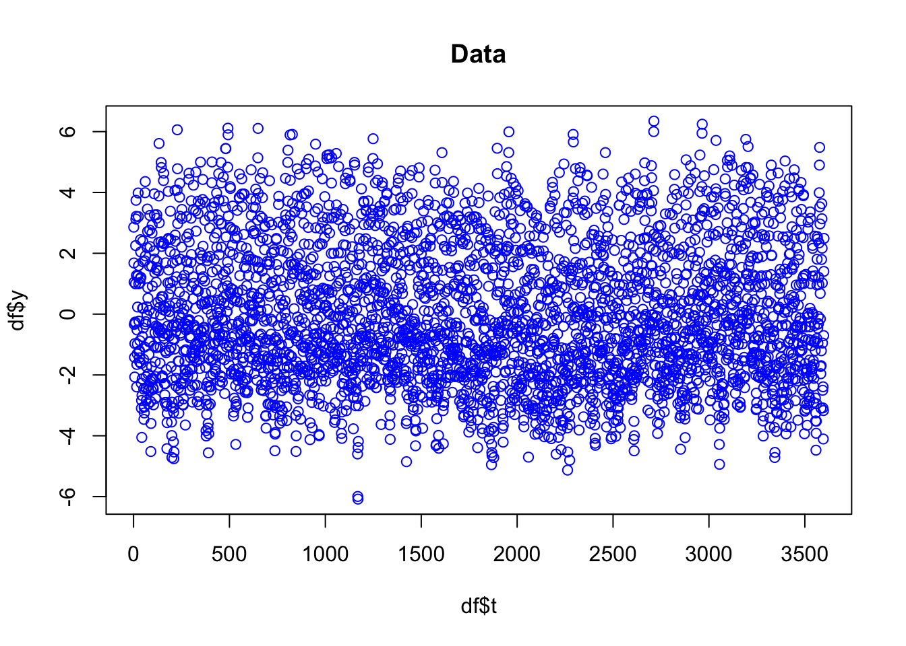
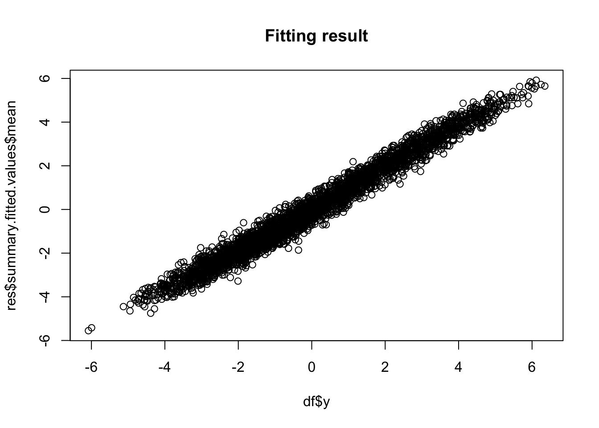
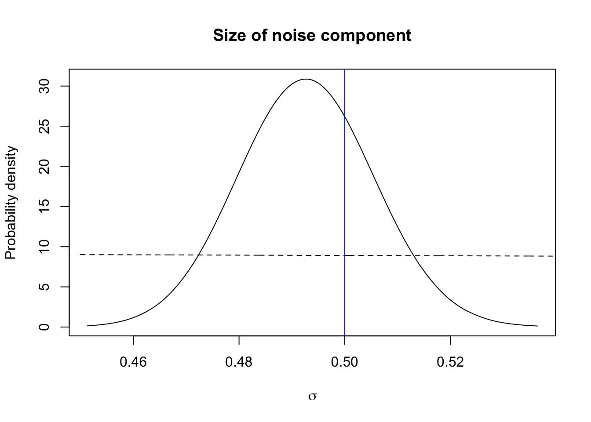
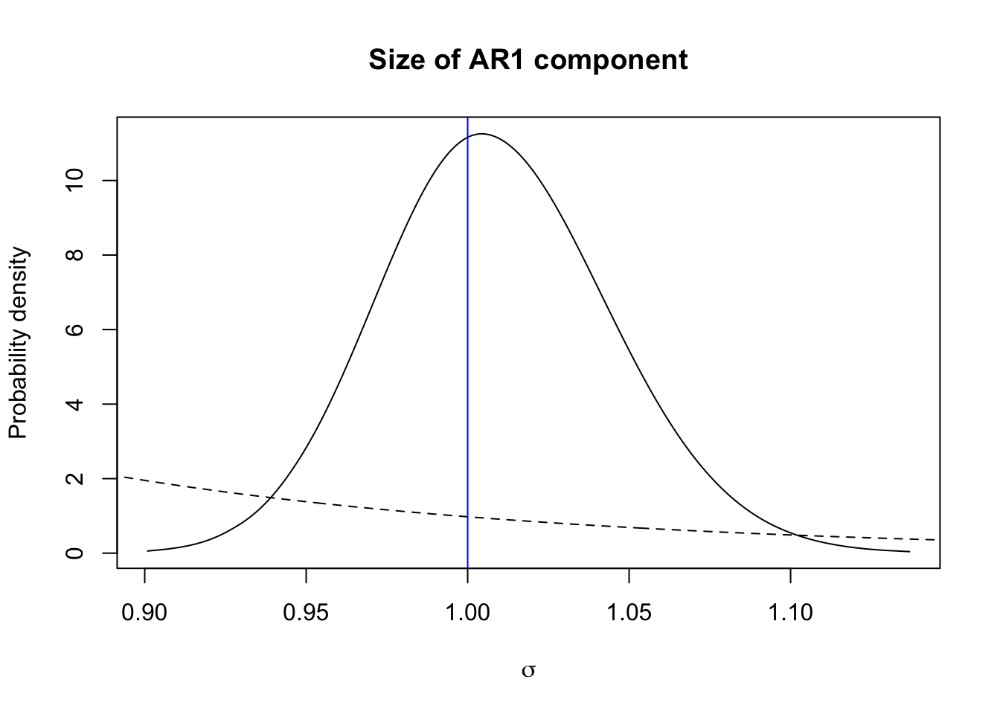
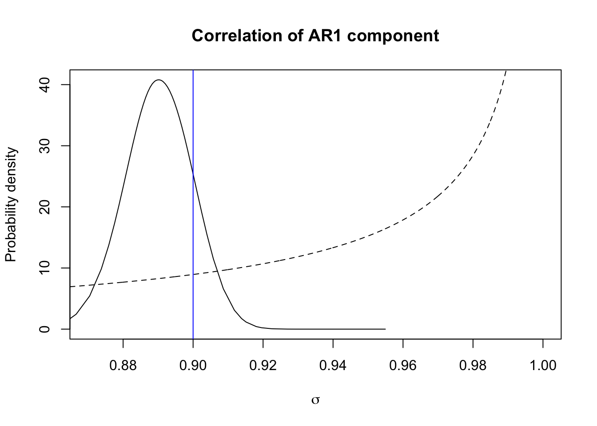
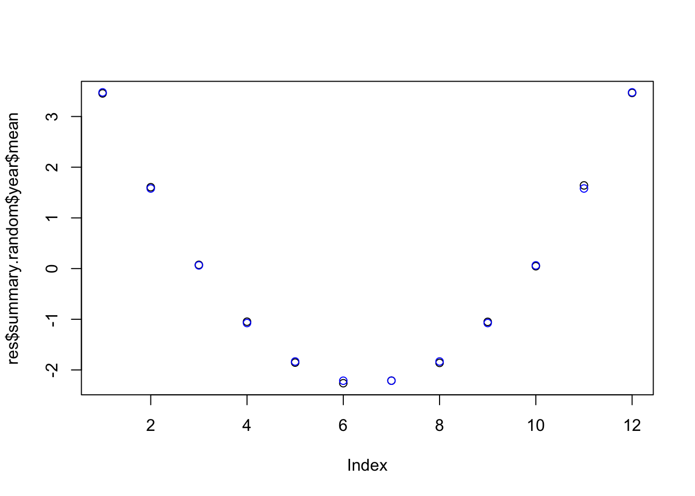

This is the Simulation-Inference counterpart to the Unemployment data example.
In this example we study when a complex model is identifiable, and how fast INLA will run.
library(INLA)
inla.setOption("num.threads", 1)
# - to only run 1 processor thread (no paralellisation)
set.seed(2017)We have a long time series, for example temperature or unemployment. This time series contain no linear trends, as those would go to \(\pm \infty\).
We assume there is one seasonal effect, repeating every 12 months.
We assume there is one other covariate with a nonlinear effect.
We want to change these to try different things.
N = 3600
# - the number of observations
# - should be a multiple of 12
sig.epsilon = 0.5
# - the Gaussian noise
sig.u = 1
# - the structured part of the time series
rho = 0.90
# - the true autocorrelation
sig.seasonal = 2
# - the size of the seasonal effectu = arima.sim(list(order = c(1,0,0), ar = rho), n = N,sd=1)
# - this sd is not the marginal standard deviation
u = u/sd(u)*sig.u
# - this has the correct standard deviationseas.coeff = (0:11)*(1:12-12)
seas = rep(seas.coeff, N/12)
seas = drop(scale(seas))*sig.seasonalgaussian.error = rnorm(N, 0, sd=sig.epsilon)y = u + seas + gaussian.errordf = data.frame(y = y, t = 1:N, year = rep(1:12, N/12))plot(df$t, df$y, main="Data", col="blue")
hyper.ar1 = list(theta1 = list(prior="pc.prec", param=c(0.1, 0.5)),
theta2 = list(prior="pc.cor1", param=c(0.9, 0.5)))
hyper.rw2 = list(theta1 = list(prior="pc.prec", param=c(0.1, 0.5)))
hyper.family = list(theta = list(prior="pc.prec", param=c(3, 0.5)))formula <- y~ f(t,model='ar1', hyper=hyper.ar1) + f(year, model="rw2", hyper=hyper.rw2, cyclic=T, constr=T)
res <- inla(formula=formula, data=df, family="gaussian",
control.predictor=list(compute=TRUE),
control.family = list(hyper = hyper.family))summary(res)##
## Call:
## c("inla(formula = formula, family = \"gaussian\", data = df,
## control.predictor = list(compute = TRUE), ", " control.family
## = list(hyper = hyper.family))")
## Time used:
## Pre = 3.74, Running = 8.31, Post = 0.415, Total = 12.5
## Fixed effects:
## mean sd 0.025quant 0.5quant 0.97quant mode kld
## (Intercept) -0.046 0.07 -0.18 -0.046 0.086 -0.046 0
##
## Random effects:
## Name Model
## t AR1 model
## year RW2 model
##
## Model hyperparameters:
## mean sd 0.025quant
## Precision for the Gaussian observations 4.13 0.217 3.722
## Precision for t 0.99 0.070 0.855
## Rho for t 0.89 0.010 0.871
## Precision for year 1.88 0.634 0.852
## 0.5quant 0.97quant mode
## Precision for the Gaussian observations 4.12 4.555 4.103
## Precision for t 0.99 1.123 0.992
## Rho for t 0.89 0.908 0.890
## Precision for year 1.82 3.229 1.674
##
## Expected number of effective parameters(stdev): 1589.68(74.03)
## Number of equivalent replicates : 2.27
##
## Marginal log-Likelihood: -4139.94
## Posterior marginals for the linear predictor and
## the fitted values are computedplot(df$y, res$summary.fitted.values$mean, main="Fitting result")
Here we plot prior, posterior and truth!
Figuring out how to plot these is not trivial, and will take some time. However, it is not a good topic to talk about in detail during a course.
marginal = res$internal.marginals.hyperpar$`Log precision for the Gaussian observations`
transform = function(x) exp(-0.5*x)
sig.eps.posterior = inla.tmarginal(transform, marginal)
plot(sig.eps.posterior, type="l", xlab = expression(sigma), ylab = "Probability density",
main = "Size of noise component")
xvals = seq(0.45, 0.62, length.out=1000)
lambda = -log(hyper.family$theta$param[2])/hyper.family$theta$param[1]
lines(xvals, 1E1*exp(-lambda*xvals), lty='dashed')
abline(v=sig.epsilon, col="blue")
The blue vertical line is the true value, the dashed line is the prior, and the full line is the posterior.
marginal = res$internal.marginals.hyperpar$`Log precision for t`
transform = function(x) exp(-0.5*x)
sig.posterior = inla.tmarginal(transform, marginal)
plot(sig.posterior, type="l", xlab = expression(sigma), ylab = "Probability density",
main = "Size of AR1 component")
xvals = seq(0.5, 1.5, length.out=1000)
lambda = -log(hyper.ar1$theta1$param[2])/hyper.ar1$theta1$param[1]
lines(xvals, 1E3*exp(-lambda*xvals), lty='dashed')
abline(v=sig.u, col="blue")
The blue vertical line is the true value, the dashed line is the prior, and the full line is the posterior.
Here we can use the standard output marginal in INLA.
marginal = res$marginals.hyperpar$`Rho for t`
plot(marginal, type="l", xlab = expression(sigma), ylab = "Probability density",
main = "Correlation of AR1 component", xlim=c(0.87, 1))
xvals = seq(0.85, 1, length.out=1000)
lines(xvals, 5*inla.pc.dcor1(xvals, hyper.ar1$theta2$param[1],
hyper.ar1$theta1$param[2]), lty='dashed')
abline(v=rho, col="blue")
The blue vertical line is the true value, the dashed line is the prior, and the full line is the posterior.
plot(res$summary.random$year$mean)
points(seas, col="blue")